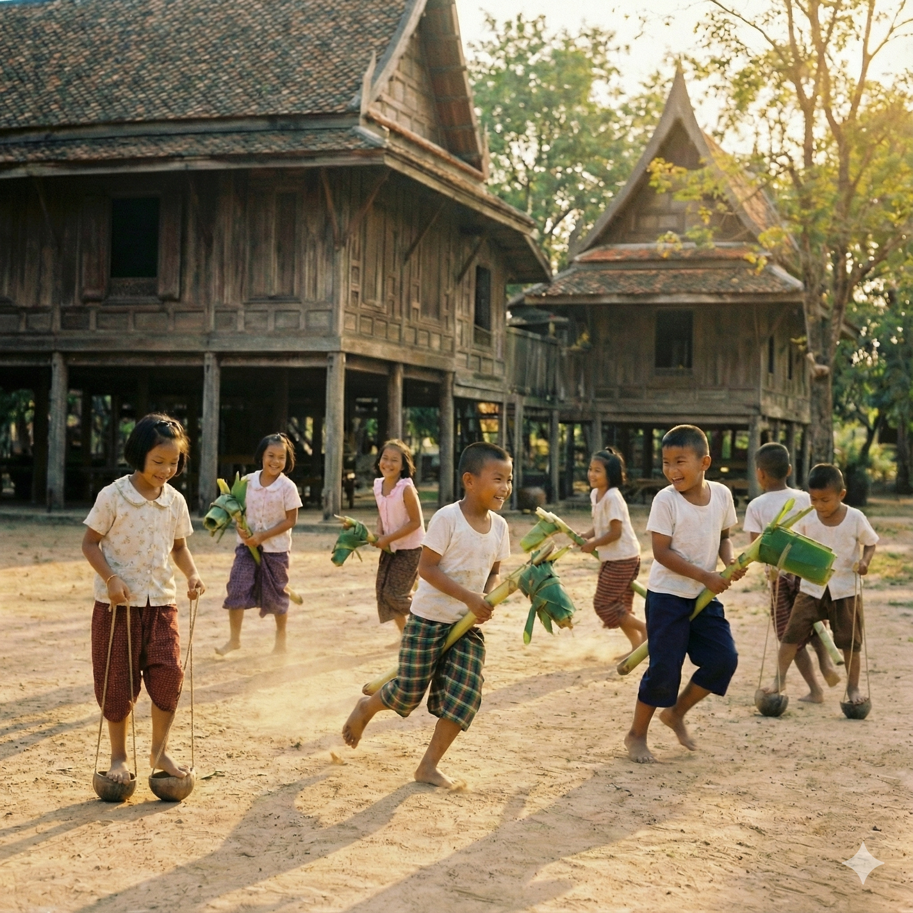

3. Ma Kan Kluay
Ma Kan Kluay In this game, children ride toy horses crafted from banana stalks. They straddle the carved stalk and run around, pretending to ride real horses. This game encourages imagination and provides great physical exercise for kids.